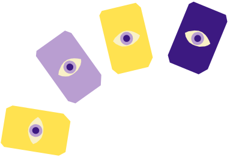
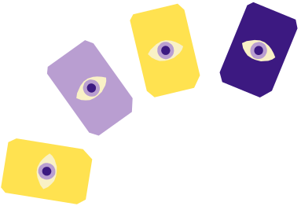
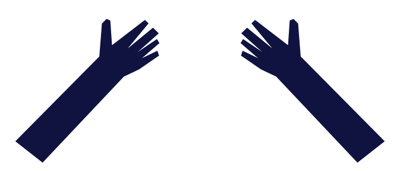
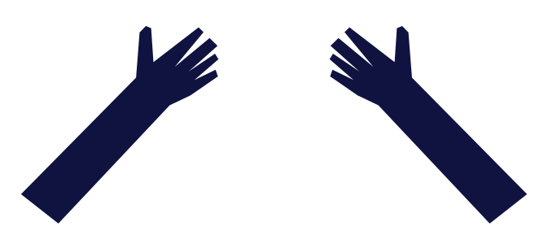

A BRIEF HISTORY OF
TAROT
Tarot began in 15th-century in Italy as a card game, but over time evolved into a powerful tool for spiritual insight and divination.
Mystical and occult teachings were added to the decks, and the images on the cards becamemore symbolic and allegorical.

 



 
